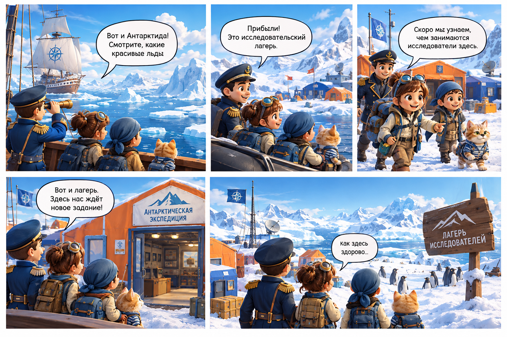

❄️ Путешествие в мир кода среди антарктических льдов ❄️

Сначала давай протестируем готовый проект и посмотрим, как он работает в полярных условиях!
Создаем умного виртуального помощника для антарктической станции.
Придумай и создай собственного чат-бота, который выполняет заданные ему задания.